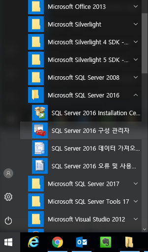

SQL Server 운영 기초
Port 변경
-
SQL Server 기본 포트는 1433 이다. 포트 변경하는 방법에 대해 알아보자.
-
시작 > SQL Server Configuration Manager

-
SQL Server 네트워크 구성 > DB 인스턴스 > TCP/IP 속성

-
IP ALL > TCP 포트에 변경할 포트 입력

Let's Prcactice
-
포트 변경 후 다른 사람의 SQL Server 로 접속하려면 어떻게 해야될까?

처음으로
이전
다음